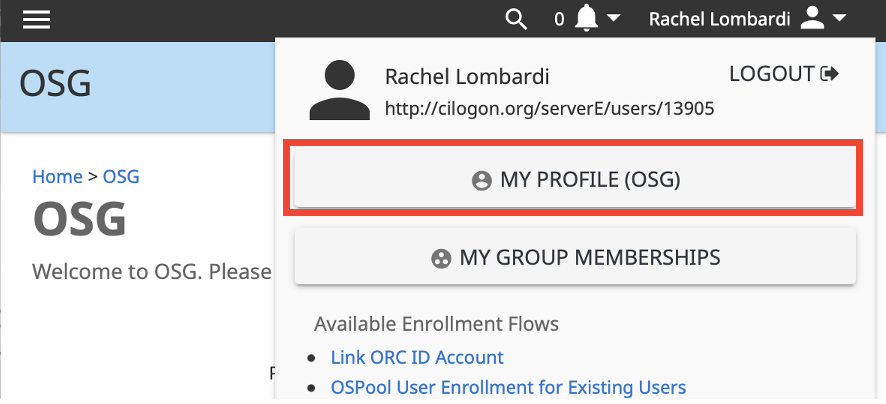
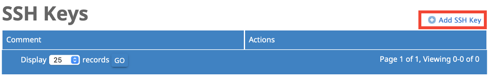

Log In to uw.osg-htc.org Access Points¶
This guide is for users who were notified by a member of the OSG team that they
will be using the uw.osg-htc.org Access Points.
To use the
uw.osg-htc.orgAccess Points (ap40.uw.osg-htc.org,ap41.uw.osg-htc.org, orap43.uw.osg-htc.org), you must have first registered and have your account approved as described here.
Log in¶
To log in, you can authenticate using one of two methods:
-
SSH key pair authentication (requires uploading an SSH key)
-
Browser-based web authentication (requires access to web browser)
Option 1: Log in via SSH Key Pair Authentication¶
You can login to the OSPool Access Point by uploading an SSH key to your COmanage account.
The process below describes how to upload a public key to the registration website. It assumes that a private/public key pair has already been generated. If you need to generate a key pair, see this guide.
-
Return to the Registration Page and login using your institutional credentials, if prompted.
-
Click your name at the top right. In the dropdown box, click "My Profile (OSG)" button.

-
On the right hand side of your profile, click "Authenticators" link.

-
On the authenticators page, click the "Manage" button.

-
On the new SSH Keys page, click "Add SSH Key" and browse your computer to upload your public SSH key.

You can now log in to your ap4#.uw.osg-htc.org Access Point from the terminal using the following command,
being sure to replace username with your uw.osg-htc.org username and specifying the assigned ap4# in your Welcome Email (for example: ap41):
ssh username@ap4#.uw.osg-htc.org
When you run this command, you may be asked for your SSH key passphrase.
Enter your corresponding passphrase and you should be logged in to ap4#.uw.osg-htc.org.
Option 2: Log in via Web Authentication¶
Logging in via web authentication requires no preparatory steps beyond having access to an internet browser.
To authenticate using this approach:
- Open a terminal and enter the following command,
being sure to replace
usernamewith youruw.osg-htc.orgusername:
ssh username@ap4#.uw.osg-htc.org
Upon hitting enter, the following text should appear with a unique URL, similar to the one in the example below:
Authenticate at
-----------------
https://cilogon.org/device/?user_code=FF4-ZX6-9LK
-----------------
Type 'Enter' when you authenticate.
-
Open your unique
https://link in your web browser. When using some terminal applications, you may be able to click on the link to open it. Otherwise, copy the link and paste it into a web browser, and hit enter. -
You will be redirected to a new page where you will be prompted to login using your institutional credentials. Once you have done so, a new page will appear with the following text:
"You have successfully approved the user code. Please return to your device for further instructions." -
Return to your terminal, and press the 'Enter' key to complete the login process.
Known Issues¶
-
Existing Account
- Error message:
SORID "http://cilogon.org/serverA/users/20186" is already associated with EnvSource - Try logging into COmanage. If you can log in, email us with your name and we will add you to the appropriate group.
- Error message:
-
Privacy enhancing plugins
- Error message:
Identifier (SORID) variable "REDIRECT_OIDC CLAIM sub" not set - We have seen this happen when a user has various "privacy enhancing" plugins installed in the browser and it blocks the necessary flow from fully happening. Try a different web browser without any plugins installed.
- Error message:
-
CILogon Code Challege Repeats
- Error message: ``` (user.name@ap41.uw.osg-htc.org) Authenticate at
https://cilogon.org/device/?user_code=AAA-BBB-CCC
Hit enter when the website tells you to return to your device ``` * CILogon code-based authentication can, at times, fail to authenticate after you login on your browser. To avoid this, we recommend generating a SSH key-pair and uploading the your public key to your COmanage account as outlined in Option 1: Log in via SSH Key Pair Authentication. We are working on resolving this issue.
Get Help¶
For questions regarding logging in or creating an account, contact us at support@osg-htc.org.